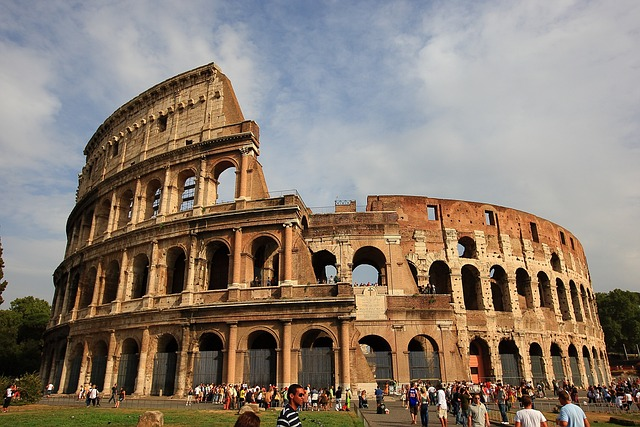
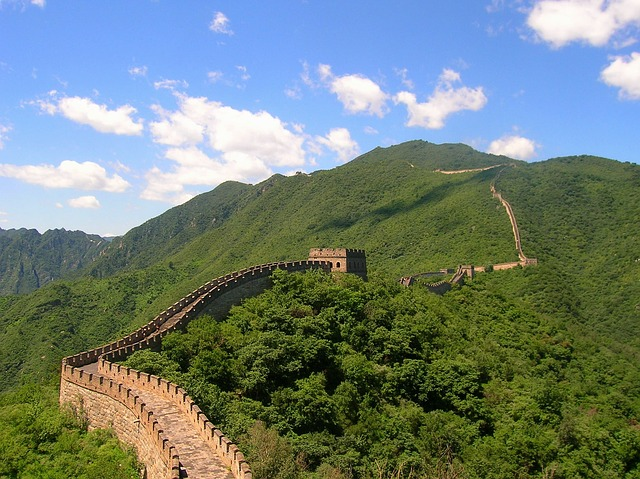
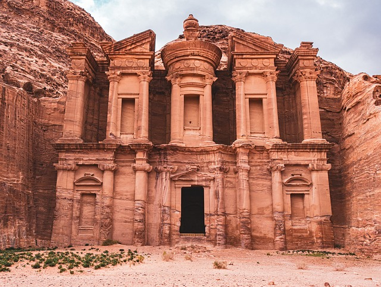

Visit these seven magnificent sights, and you'll have checked off four continents on your travel list
as well.
"For the longest time (we’re talking millennia here), we had the Seven Wonders of the World.
There was just one problem for the demanding 21st century travel set.
Except for the ever durable Great Pyramids of Egypt, the rest were nothing more than distant
memories
from a hazy history.
Want to see the Hanging Gardens of Babylon or the Colossus of Rhodes? You missed that boat by many
centuries. A rendering in a book or online is the best you’ll ever do.
The solution? In 2007, a global contest was held and more than 100 million votes were cast for the
New
Seven Wonders of the World.
And while many of them are very old, they’re still here! These are durable destinations where we can
actually go see the wonders – and take a selfie for posterity." CNN
- Travel
The Seven Wonders of the World
Chichen Itza (Mexico)
One of numerous UNESCO World Heritage Sites on the list, the complex of
Chichen
Itza is the most
famous symbol of the once mighty Mayan civilization. Archaeologists believe Chichen Itza emerged
as a major economic and cultural center around 600 AD and grew for several centuries.
It was eventually abandoned and lost to nature in modern Mexico’s Yucatán Peninsula. The ruins
weren’t uncovered until 1841, and it’s only become a big tourist destination in recent decades.
The pyramid of El Castillo (“The Castle”) is probably the best known structure of the once vast
city.
Best time go: Go early in the morning before it gets too hot and cruise ship
passengers from
Cancun arrive. People also go for spring and fall equinoxes for an unbelievable shadow show –
but expect huge crowds then.
Christ the Redeemer (Brazil)
The Christ the Redeemer statue was finished in 1931 but has already
taken its
place in the
pantheon of historic wonders. Standing 30 meters (98 feet) tall and outstretched arms spanning
28 meters (92 feet), the simple but mesmerizing white statue of Art Deco design has an amazing
view over Rio de Janeiro.
It’s one of the most magnificent meetings of natural and man-made beauty in the world.
Best time go: Rio tends to be drier (better for those spectacular views) but also
hotter in
December through February. Afternoons have bigger crowds generally. Mornings are better for
taking pictures of the statue; afternoons are better for taking pictures of the city panorama.
Expect more people during weekends and Rio’s Carnival.
Colosseum (Italy)

Those Romans sure did enjoy their games – gladiator fights, man vs.
animal
contests, chariot
races and even mock naval battles. And say what you will about their entertainment choices, they
built a Colosseum to last.
Emperor Vespasian ordered the construction around 71 AD, and it was dedicated in 80 AD during
the rule of his son Titus. It held around 50,000 spectators and even had a retractable awning to
shield Romans.
Given how quickly stadiums come and go in the modern age, it makes this feat of engineering all
the more amazing. And this freestanding structure sits in the middle of a bustling, modern-day
Rome.
Best time go: You’ll find fewer tourists there during Rome’s low season (winter),
weekdays
and during the opening hour (8:30 a.m.) or near closing time (varies during time of year). If
you show up in summer at midday, it’s going to be hot!
Great Wall (China)

The Great Wall began around 220 BC, and construction continued for
millennia. Its purpose: Keep
nomadic people to the north out of China. Eventually, it couldn’t hold back the Mongols, who
successfully invaded in the 13th century anyway and set up shop in what’s now Beijing under the
direction of Kublai Khan.
However, the Great Wall has turned out to be a great way to usher an invasion of tourists (and
their money) into China in recent decades.
Stretching for 8,852 kilometers (5,500 miles) along the best-preserved Ming Dynasty portion of
the superstructure, its travel appeal is obvious. In the words of UNESCO’s page on the wall:
It’s “an outstanding example of the superb military architecture, technology and art of ancient
China.”
Best time go: Plan for a spring or fall trip when the weather is nicer and fewer
people
visit. Summertime is often hot and crowded, and winter can be bitterly cold in northern China.
Machu Picchu (Peru)
Machu Picchu is the most isolated and challenging-to-reach of the New
Seven Wonders of the World
(among other things, you have to adjust to the high altitude of the Peruvian Andes).
But oh what rewards you’ll find: the most splendid example of Incan architecture placed in a
jaw-dropping landscape of tropical mountain forest. There are about 200 structures in this
religious and agricultural center set on a steep ridge crisscrossed by terraces of stone.
Amazingly, it was in active use only a short time, historically speaking. The Inca built it in
the 15th century, but it was abandoned after the Spanish invasion in the 16th century.
Best time go: Dry season, which runs April to October (though weather in the Andes
is hard to
predict). Peak crowds are June through August. Because of the fragile nature of the area, new
ticketing rules limit the number of tourists at at any given time – so you must book for a
morning or afternoon slot.
Petra (Jordan)

Set in modern-day Jordan’s southwestern desert region between the Dead
Sea
and the Red Sea, Petra
was inhabited going back to prehistoric times.
People today may recognize it from the 1989 movie “Indiana Jones and the Last Crusade,” but
during the classical heydays of Greece and Rome, it was known as an important caravan stop
between the Mediterranean and the Far East. By the 7th century AD, it was abandoned. But its
desert location preserved much of it through the centuries
No wonder it mesmerizes visitors today – its blend of Eastern and Hellenistic styles, half-built
and half-carved into the natural red sandstone of the area, truly deserves the term “unique.”
Best time to go: Summer can get very hot in Jordan, and winter is much colder than
you may realize. Weatherwise, aim for spring or fall.
Taj Mahal (India)
Did you know the world-famous Taj Mahal is actually an incredibly
elaborate tomb and an enduring
symbol of love?
Mughal Emperor Shah Jahan ordered construction in 1632 as a monument to his wife, Mumtaz Mahal.
The stunningly beautiful structure, considered the height of Indo-Islamic architecture, was
completed in 1648.
The white marble structure is in Agra, about 212 kilometers (132 miles) south of India’s
capital, New Delhi.
Best time to go: Late spring and early summer in this part of India has often
brutal heat (but
fewer crowds). Then come monsoons. November to February is your best chance for pleasant
weather. The sunrises here are highly admired.